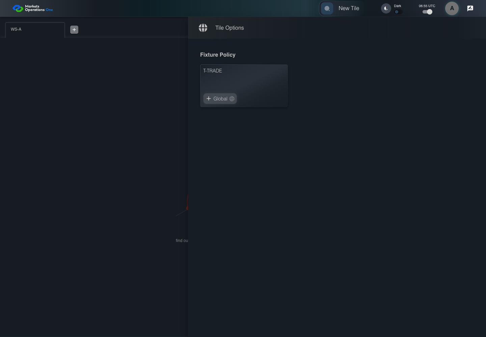
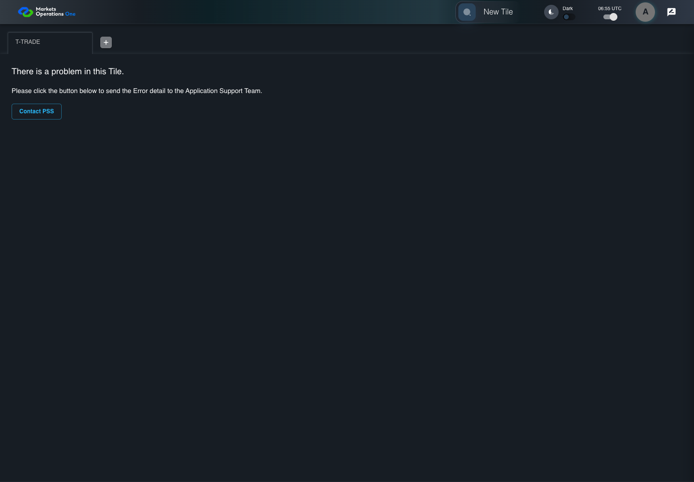

KNOW-014 actual current BFF catalog eligibility
BLOCKED_NOT_EXECUTED · application/run-080/know-014-actual-current-bff-catalog-eligibility-9ac65ffacae4-attempt-1 · ACTUAL_APPLICATION_LOCAL_SERVICES
Actual MFE and current single-ui-bff auth controller, AdminModuleUtil catalog filtering, AuthFilterExecutor, PostgreSQL18.4 with exact migrations, and JPA repositories. Synthetic local OUD identity Alice and controlled EMS2 entity response. External EMS3 adapter disabled; isolated Spring Boot3 bootstrap replaces production Boot4 configuration. KNOW014 records the missing shell open-authorization operation. KNOW015/017 use proposed URL navigation overlays because canonical targets remain undefined. No protected tenant fields, denial states, or production provider acceptance are fabricated.
2026-10-22T06:55:39.166Z to 2026-10-22T06:55:44.637Z
Assertions and result · Artifact manifest · Exact run inputs and source hashes
Result SHA-256:9a231c26fe6eb6183c82ab0e6c008cdb84990f0763490aa29cc707176cdbf070Execution prerequisite: UNKNOWN. Owner: Business contract owner: unknown. Next action: Resolve the retained prerequisite.
Machine observations
- actual-catalog-seed.json
75875031e13018d7fd063fd6081a42d12480d16f5b0330458b8d4893680c0c5c - actual-filtered-login.json
7fd9828761e8c0a292e0a12bd90d72dbd528c5b437cc2531ea15847c3b09baad - execution-blocker.json
8fe3d3e73995ca92c8656001014511b9ea548bfdc022fecf62908455ca1a9d02 - open-operation-observation.json
c71113a40cd3f90ebe9bf53e4eb1f1555a297974dfe1d17ff07e03bfb59579ce - revoked-provider-state.json
e65b14d9a22c62d908b3e9c9c07eba9fc488406420e1462747c9aee7ba006306
Screenshot capture: CAPTURED. Named frames: 9.
Step screenshot evidence: INCOMPLETE. 8/10 canonical steps have execution screenshots.
Step 9 has no screenshot from an executed step. Step 10 has no screenshot from an executed step.
Canonical step timeline
Given Alice uses an isolated browser profile with the synthetic identity and permissions defined for this case
Execution: PASSED.
1. step-01 Visible state after step 1: Given Alice uses an isolated browser profile with the synthetic identity and permissions defined for this case
2026-10-22T06:55:42.569Z · 1440×1000
Step: /Users/lushevol/code/github/ratan-release-impact/workbench/tasks/ui-test-coverage-20261022/test-cases.md:10903
SHA-256:99567bb3808af958792a6b38879d848938c08b417fb7dfff75bde75fcbd51a3aAnd the synthetic catalog uses exact tile titles "T-TRADE", "T-CASH", and "T-REPORT"
Execution: PASSED.
2. step-02 Visible state after step 2: And the synthetic catalog uses exact tile titles "T-TRADE", "T-CASH", and "T-REPORT"
2026-10-22T06:55:42.812Z · 1440×1000
Step: /Users/lushevol/code/github/ratan-release-impact/workbench/tasks/ui-test-coverage-20261022/test-cases.md:10904
SHA-256:99567bb3808af958792a6b38879d848938c08b417fb7dfff75bde75fcbd51a3aAnd T-TRADE requires entity "E-TRADE" and subject "S-VIEW"
Execution: PASSED.
3. step-03 Visible state after step 3: And T-TRADE requires entity "E-TRADE" and subject "S-VIEW"
2026-10-22T06:55:42.967Z · 1440×1000
Step: /Users/lushevol/code/github/ratan-release-impact/workbench/tasks/ui-test-coverage-20261022/test-cases.md:10905
SHA-256:99567bb3808af958792a6b38879d848938c08b417fb7dfff75bde75fcbd51a3aAnd T-CASH requires entity "E-CASH" and subject "S-VIEW"
Execution: PASSED.
4. step-04 Visible state after step 4: And T-CASH requires entity "E-CASH" and subject "S-VIEW"
2026-10-22T06:55:43.078Z · 1440×1000
Step: /Users/lushevol/code/github/ratan-release-impact/workbench/tasks/ui-test-coverage-20261022/test-cases.md:10906
SHA-256:99567bb3808af958792a6b38879d848938c08b417fb7dfff75bde75fcbd51a3aAnd T-REPORT permits entities "E-RR-A" and "E-RR-B" with an empty subject
Execution: PASSED.
5. step-05 Visible state after step 5: And T-REPORT permits entities "E-RR-A" and "E-RR-B" with an empty subject
2026-10-22T06:55:43.204Z · 1440×1000
Step: /Users/lushevol/code/github/ratan-release-impact/workbench/tasks/ui-test-coverage-20261022/test-cases.md:10907
SHA-256:99567bb3808af958792a6b38879d848938c08b417fb7dfff75bde75fcbd51a3aAnd The visible catalog contains the discovered tile "T-TRADE"
Execution: PASSED.6. step-06 Visible state after step 6: And The visible catalog contains the discovered tile "T-TRADE"
2026-10-22T06:55:44.198Z · 1440×1000
Step: /Users/lushevol/code/github/ratan-release-impact/workbench/tasks/ui-test-coverage-20261022/test-cases.md:10908
SHA-256:185214dc820a3a643554ee0fa7924cd6cd1ecc8d40b8bd4d1de0b1a3ea77422aAnd The next tile authorization response uses the revoked E-TRADE entitlement fixture
Execution: PASSED.
7. step-07 Visible state after step 7: And The next tile authorization response uses the revoked E-TRADE entitlement fixture
2026-10-22T06:55:44.264Z · 1440×1000
Step: /Users/lushevol/code/github/ratan-release-impact/workbench/tasks/ui-test-coverage-20261022/test-cases.md:10909
SHA-256:9d55eb9af0753ca4eea2c342ca8abdeac1db9e9be0dbfb18417b7ff7141e2fe0When Alice clicks the text "T-TRADE" in the drawer panel headed by "Tile Options"
Execution: PASSED.
8. step-08 Visible state after step 8: When Alice clicks the text "T-TRADE" in the drawer panel headed by "Tile Options"
2026-10-22T06:55:44.353Z · 1440×1000
Step: /Users/lushevol/code/github/ratan-release-impact/workbench/tasks/ui-test-coverage-20261022/test-cases.md:10910
SHA-256:daee846ef9069171998154767d0c8561e489c69569a4b6c1bab6fbad3eb4266aThen no protected T-TRADE business field is visible after the open authorization response settles
Execution: NOT_EXECUTED.No screenshot is recorded for this step. No executed state is claimed.
And the portal displays the agreed denied-access or expired-access state
Execution: NOT_EXECUTED.No screenshot is recorded for this step. No executed state is claimed.
Additional named frames

The final visible state after the named test assertions.
2026-10-22T06:55:44.418Z · 1440×1000Step: Test source: /Users/lushevol/code/github/ratan-release-impact/workbench/e2e/audit-specs/knowledge-current-bff.spec.ts:26
SHA-256:
daee846ef9069171998154767d0c8561e489c69569a4b6c1bab6fbad3eb4266aScreenshots establish visible state only. Assertions and traces support functional claims.